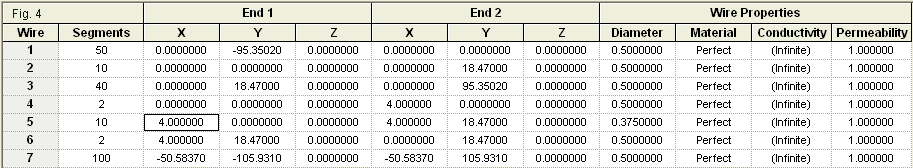

Newer modelers often carry into the enterprise a number of presumptions about antenna structures or geometries. One of them is that small appurtenances on an antenna generally make no difference and thus we may ignore them, thus simplifying the model. In many cases, the presumption works, but sometimes it does not.
The presumption toward simplification combines with an urge that the newer modeler should try to overcome. The urge is to create a single model for a given antenna. After all, we have only one subject antenna, and a single model should correspond to it. Along that road the modeler will eventually discover that he or she is blocking a host of information that might be acquired about the antenna's performance.
In this episode, we shall explore what we can learn both by overcoming the presumption underlying simplification of models and by setting aside the urge to encapsulate everything in a single model. Our example will be the gamma-match assembly used by so many Yagi beams. However, the general ideas surrounding our exploration will have applications elsewhere. It may seem at times that we are discussing gamma matches, but our real subject matter is careful modeling.
Why the Gamma Match Is So Hard to Model
Let's suppose that a particular Yagi design uses a gamma match. We often encounter such assemblies when the manufacturer chooses to connect the antenna elements directly to the conductive boom. Fig. 1 shows one such assembly.
The assembly has several features that automatically make it difficult to model. First, the connector plate and the shorting bar are not round wires. Second, the series capacitor takes the form of concentric tubes with a dielectric lining between them. Third, the gamma rod may extend beyond the shorting bar, although that extension is minimal in the photo. Fourth, the gamma rod is very often not the same diameter as the element. Fig. 2 summarizes in outline form the differences between the physical gamma match assembly and the model that we are likely to make.
If we choose to model the gamma match, we are likely to add the minimal number of wires needed to do the job. As well, we are likely to place the series capacitor at the feedpoint to simplify the compensation for the usual inductive reactance at the feedpoint.
These two measures assume that we are inclined to model the gamma match at all. Some modelers shrug off the match as being "simply a match," akin to beta and series matching systems, and they model the antenna without the match in place. Of course, beta matches and series matching systems add transmission lines or lumped components at the feedpoint and do not change the fundamental driven-element geometry. In contrast, the gamma match adds wires in the feedpoint region and thereby changes the geometry of the element. Short of extensive field-testing, we cannot know in the absence of an adequate model whether the driven element changes result in any pattern changes for the beam relative to the patterns without the match. Therefore, let's assume that modeling a gamma match is a worthy task, even if it creates a more complex model.
We can only model a gamma match if the modeling software is capable of handling the task. NEC (both -2 and -4) faces some major challenges in this regard. If the gamma rod is not the same diameter as the main element, then we shall have from 2 to 4 angular junctions of wires with dissimilar diameters, depending on the diameter that we assign to the gamma connector plate and the shorting bar. In addition, NEC shows limitations when we bring into close proximity parallel wires of different diameters, even if we carefully align the segment junctions. In garden-variety cases, NEC will show average gain test (AGT) scores in the region 0.9 when 1.000 is the ideal. Hence, we may expect gain errors greater than 0.4 dB and impedance errors about 10% off the mark. For these reasons, many NEC modelers give up altogether trying to model gamma matches.
Raw MININEC 3.13 has equal or greater difficulties. First, the core shows considerable error at corners unless we use a very high number of segments. Second, the uncorrected core has difficulties with closely spaced wires. Third, the core exhibits a frequency drift that leads to various degrees of inaccuracy as we raise the modeling frequency higher. One problem that MININEC does not have is handling junctions of wires with dissimilar diameters. However, if we compare the gamma structure to the listed problems, we might also disqualify MININEC as an appropriate modeling core. Seemingly we are left with nothing to use--at least within an economic price range.
However, the development of MININEC has seen numerous correctives that largely overcome the flaws in the raw core. Perhaps the most refined version is part of the Antenna Model package, with correctives for corners, frequency, and closely spaced wires. In addition, Antenna Model has added the AGT test to the user-accessible outputs for running model assessments. Therefore, if we are willing to take the time to model a gamma match assembly, we may be able to learn something.
Basic Modeling Requirements
Let's begin with a 2-element 28-MHz beam for which we might use a gamma match. We shall specify the use of 0.5"-diameter elements. The driver will be 190.7" long, while the reflector will be 211.9" long. The spacing will be about 0.12 wavelength or 50.58". Without a gamma match, Antenna Model reports the feedpoint impedance as 29.84-j25.73 Ohms. The AGT score is 0.9997, which is exceedingly close to ideal.
One limitation that is inherent to both NEC and MININEC is that neither core will reveal boom effects in the event that we wish to connect the element directly to the boom. However, that fact does not prevent us from using a gamma match; it only means that the results will not precisely reflect a real situation.
We provided a modeling report, but omitted one critical fact: the level or density of segmentation. For the pre-gamma model, the level makes no difference, and we might use any value from about 10 segments per element upward. However, the segmentation density will make a considerable difference when we create the gamma model. Therefore, we use 100 segments per element for both the pre-gamma and the gamma model. Fig. 3 helps us explain why.
At 28 MHz, each segment will be about 2" long. With the 0.5"-diameter elements, this segment length allows a 4:1 segment-length-to-diameter ratio, well above the limits for either NEC or MININEC. Next we shall construct a gamma match, as shown on the driver element in the outline. The main-element-to-gamma-rod spacing is 4" center-to-center. Note that we need to place the feedpoint or source at the connecting wire center, that is, on a pulse or segment junction. A 2-segment wire gives us the source position that we need and also allows for segments that are roughly equal in length with the segments on the other parts of the overall driver assembly.
Note that the driver element itself now consists of 3 wires. The non-gamma side has 50 segments. We divide the gamma side into two parts such that the gamma section has N segments, and the remainder has 50-N segments. N is based on the length that we eventually assign to the gamma rod. Given the driver length, the final gamma rod requires 9.7 segments. Since we can only assign segments in integers, we give both the short main element section and the gamma rod 10 segments each, with the remainder of the main element receiving 40 segments. Fig. 4 provides a look at the Antenna Model Wire table that describes the geometry that we have just created.

Several additional facts present themselves in the table. Foremost is the fact that our model uses a 0.375" diameter gamma rod. However, the 2-segment connecting wires use that same diameter as the main element. Although this initial strategy reflects the relatively "beefy" structure that we saw in Fig. 1, it does leave us with a future question about the affect of connecting wire diameter on gamma performance. In addition, the model has no gamma rod extension beyond the limit of the far-end connecting wire. Hence, we acquire a second question for future exploration. The wire table itself does not show the position of the source, which is at the center of the connecting wire at the element center. The series capacitor in the form of a load is also missing from this table. As a starting point, we place it at the same pulse as the source.
With a gamma rod that is 18.47" long and a series capacitance of 38.32 pF, we obtain a gamma-match feedpoint impedance of 50.04+j0.07 Ohms. You may use any set of limits that you desire in setting the gamma assembly. Since I do a good bit of systematic modeling, I used very tight tolerances: 0.1 Ohm for either resistance or reactance relative to the 50-Ohm target value. The AGT score for this model is 1.0005, once more very close to ideal.
With so many open questions, we cannot claim that this model is yet a good building guide. However, it does provide us with an internally consistent and adequate model of a gamma match for an element that is electrically independent of any supporting boom. Thus, we have a starting point for further exploration.
The NEC Question
We may construct the same model of a gamma-matched beam using NEC. I shall use NEC-4 (single-precision), as provided in the EZNEC Pro/4 package for the exercise. Fig. 5 shows the EZNEC wire table for ready comparison with the corresponding Antenna Model table in Fig. 4.
For most linear elements with a center feedpoint we must use an odd number of segments in at least the driven element. However, the gamma match element is not on the main element, but on the connecting wire. Hence, we can replicate the MININEC segmentation--with one exception. Centered NEC sources require an odd number of segments. Therefore, I increased the segments in the connecting wires to 3. Having shorter segments in the connecting wires is the better option, since it allows the source to have a segment on either side of the source segment that is the same length as the source segment. NEC tends to be most accurate under this condition.
If we use the same 18.47" gamma rod that we used in the earlier model, but change the series capacitor to 37.15 pF, we obtain a feedpoint impedance of 55.30-j0.06 Ohms. The NEC result is 5 Ohms off the target 50-Ohm value. If we check the AGT score for the model, NEC-4 returns a value of 0.902, a considerable distance from the ideal value. We would expect the forward gain of the antenna to be about 6.25 dBi, but the NEC report is a gain value of 5.80 dBi. NEC appears to be considerably off the mark with such numbers.
In order to obtain a 50-Ohm feedpoint impedance within the prescribed limits for this exercise, we must change the modeled gamma rod length and the value of series capacitance. If we reduce the gamma rod length to 17.56" and use a 39.36-pF capacitance value, we can obtain 50.07-j0.01 Ohms. However, the trustworthiness of this report is cast in doubt by the 0.904 AGT score for the revised model. As well, we can find some further fluctuations that are interesting. For example, changing the ratio of gamma segments to remainder segments between 9-41 and 10-40 yields a 0.3" change in the required gamma-rod length--not much but noticeable. As well, single-precision and double-precision versions of NEC-4 yield slightly different values, a very unusual situation in more adequate (higher-AGT-score) models.
All is not necessarily lost in terms of using NEC as a preliminary guide to gamma matching. The AGT scores can help us provide some correctives to the data. For example, we may translate a basic AGT score into a value in dB by taking 10 times the log of the AGT score. For the 0.902 value, we obtain -.45 dB. If we add this value to the gain report (5.80 dBi), we obtain the pre-gamma-match beam gain of 6.25 dBi, which coincides with the Antenna Model reports for both the pre-gamma and the gamma models.
For a normal feedpoint that is close to resonant, we may generally correct the reported feedpoint impedance by multiply the basic AGT value times the report of the resistive component. 55.30 * 0.902 = 49.88 Ohms, very close to our target value. Therefore, we can employ the following strategy to model a gamma match. First, develop an approximate model using the required wire diameters. Actually, the only approximation will be the gamma-rod length. Obtain an AGT score. Divide the target impedance (in these examples, 50 Ohms) by the AGT to obtain a new target value. Redesign the gamma assembly to obtain the revised target impedance.
Alternatively, you may design the gamma match for 50 Ohms. Divide the modeled gamma rod length by the square root of the AGT to obtain the actual value. The revised model had an AGT score of 0.904 and produced a 50-Ohm impedance with a gamma-rod length of 17.56". Applying this technique yields a revised gamma-rod length of 18.49", very close to the value produced by the Antenna Model version of the assembly.
Both techniques are approximate and may vary as we change the precise ratio of gamma-rod segments to remainder segments. As well, the series capacitance will likely hold only within about +/-1pF. Nevertheless, they may prove useful if one only has a NEC program with which to work.
Some Additional Questions and Additional Modeling
For any gamma-matched beam, whatever the size, learning to construct such structures can be useful in more ways than just trying to model the gamma assembly itself. For example, the modeling technique is useful in seeing whether the assembly yields a significant distortion to the normal beam pattern. The gamma matches constructed for the sample models extend forward of the main element by the 4" spacing value that we selected. We may ask whether the gamma assembly in any way disturbs the pattern that we might obtain from the antenna without the gamma match in place.
By means that may vary with the specific software that we use, we can compare the patterns of a pre-gamma and a gamma-matched model (understanding that the comparison will not account for any boom effects). For the sample models that we have used so far, Fig. 6 provides two sorts of comparison. For this exercise, I selected the EZNEC models precisely because the gamma-model shows a reduced gain. As a consequence, the forward lobes of the two beam patterns are fairly distinct. (A moderately poor AGT score ordinarily does not disrupt a radiation pattern shape.)
The overlaid patterns show the degree to which the gamma assembly tilts the radiation pattern in the X-Y plane (ordinarily the azimuth plane). The amount is detectable, but minuscule, far below the level that we could notice in operation and likely below the level that we could measure. The smaller patterns to the right compare the degree to which the gamma match assembly might disturb the side nulls. For a match-less beam, the nulls exceed NEC's ability to record them in a finite number of digits. However, the side nulls in the gamma model have a limited depth--perhaps -40 dB relative to forward gain of the array. Although numerically detectable, the difference between -40-dB nulls and indefinitely large nulls is completely insignificant.
On the basis of a single 2-element Yagi design that does not show boom effects, we cannot reach the conclusion that gamma matches do not distort beam patterns. The point of the example is not the conclusion, but the use of modeling to reach a preliminary conclusion on a case-by-case basis relative to an antenna design under analysis.
In addition to examining the question of pattern distortion, we can also and easily perform some systematic modeling to answer "what-if" questions. Perhaps the first question is what happens when we change the diameter of the gamma rod. We may keep all of the model parameters as we began, using the same pre-gamma model. We shall also retain the connecting wires at the 0.5" main-element diameter and revise only the diameter of the gamma rod. In fact, for simplicity in this exercise, we shall keep the same ratio of segments on the gamma side: 10 segments for the gamma length and 40 for the remainder of the half elements. For each new gamma rod diameter, we shall record the gamma rod length and the series capacitance required to bring the feedpoint impedance to 50 Ohms within the tolerances that we previously used. The results will resemble those in Table 1.
Those who are familiar with some of the algebraic methods of calculating gamma matches may be surprised by the very small change in the length of the gamma rod as we vary the rod diameter over a 5:1 range. The difference is a mere 0.25". The change in the required capacitance is larger (about 7 pF), but still small.
The exact numbers in the table are less important than what they can tell us about the probable behavior of a gamma match. The models suggest that a gamma match is not especially sensitive to changes in the gamma rod diameter. We may easily perform a similar systematic investigation beginning with any main element diameter and any value for the spacing between the gamma rod and the main element. Therefore, we need not treat the results of this test as generally true. Instead, we can perform the requisite test for ourselves using the materials and test frequency for virtually any beam.
Unfinished Business
In the course of our exploration of the basic modeling techniques needed for the gamma match as an example of an "odd structure," we did not strive to develop a gamma match that we can build. Instead, we strove to assemble a model that we can rely upon, at least internally to the modeling enterprise. Unfortunately, all forms of gamma-match calculation have undergone only spot checks. Hence, we cannot determine which of the numerous systems of gamma design is the most accurate to physical reality. Nevertheless, we can examine the trends suggested by the models in anticipation of actual building experiences.
We did encountered a number of questions left unanswered by our initial attempts to formulate and analyze gamma-match models. For example, we may wish to know the consequences of varying the spacing between the main element and the gamma rod. We may wish to understand the effects of leaving a gamma rod extension beyond the shorting bar. Do variations in the connecting-wire diameters have significant effects on the gamma-rod length or the series capacitance? Finally, what are the consequences of moving the series capacitor position from its ideal modeling position?
Therefore, we may usefully spend another episode on this topic. Our goal will not be to come up with definitive answers. Instead, we shall examine the nature of the models that can provide those answers, at least within the limits of the modeling enterprise.